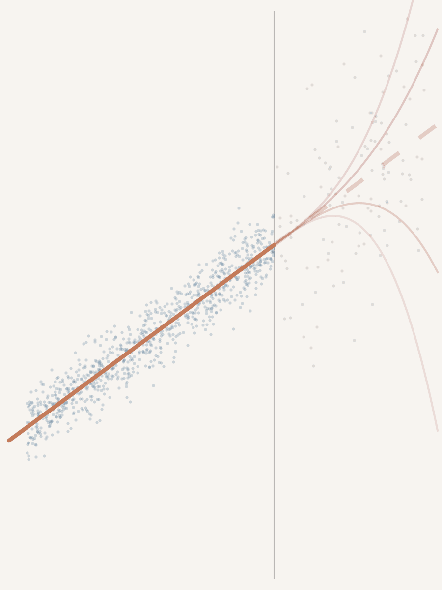
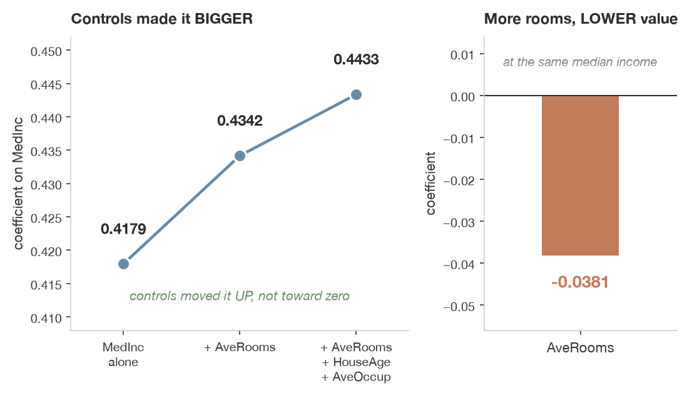
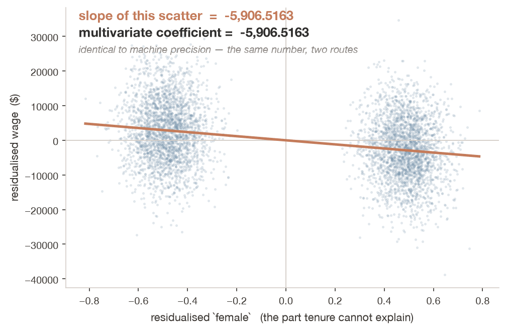
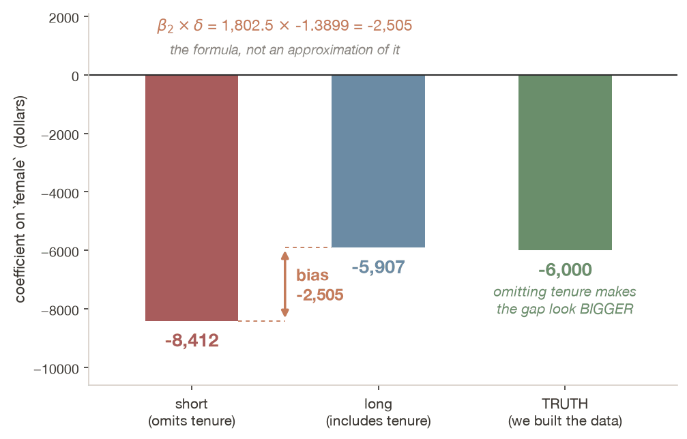

No miles yet. The best single guess is the room’s mean. Each click draws one of you at random: how wrong is the mean for that person?
Waiting for both numbers from at least 8 of you.
ECON 5200 • Causal ML & Applied Analytics • Bridge Session
Chapters 12 and 13 of the 3916 track, compressed — the notation this course assumes from Chapter 12 onward
Dr. Richeng Piao
Department of Economics
Northeastern University

Send two numbers. Rough is fine. We use them in two minutes.
1. Minutes it took you to get here today
2. About how many miles you came
No miles yet. The best single guess is the room’s mean. Each click draws one of you at random: how wrong is the mean for that person?
Waiting for both numbers from at least 8 of you.
The line through your points that makes the squared misses as small as they can be: least squares. Same three students, now guessed from their miles.
Waiting for both numbers from at least 8 of you.
Shuffle the miles across the room, so they belong to nobody, and fit the line again. Do it 1,000 times. How often does chance reach an R² as big as ours?
Waiting for both numbers from at least 8 of you.
At Chapter 11 the book forked. ECON 3916 spends two chapters on OLS; you go straight to Difference-in-Differences. That was the right trade — and it left notation behind.
1
Read β̂ = (X′X)−1X′y and say what the design matrix and a partial effect are
2
Distinguish R² from RMSE — and know why §12.4 cares about the first-stage F instead
3
State Frisch–Waugh–Lovell as a three-step procedure — the skeleton of DML in Chapter 24
4
Predict the direction of omitted-variable bias from two correlations
Chapter 10 ran four regressions
The collider demonstration printed −0.593 where the truth was 0. You read the coefficient as a number and drew the right conclusion — deliberately, without the algebra.
Chapter 11 runs one more, next
The DiD interaction coefficient is the four-means calculation. The regression adds standard errors and covariates — nothing conceptual.
From Chapter 12 onward that courtesy stops. The weak-instrument diagnostics in §12.4 and the local linear fit in Chapter 13 have no arithmetic version. Twenty-five minutes now, to avoid an hour of confusion then.
What the machine actually computes
OLS picks the coefficient vector minimising the sum of squared residuals. Nothing more mysterious than that.
$$\hat{\boldsymbol{\beta}} = (\mathbf{X}'\mathbf{X})^{-1}\mathbf{X}'\mathbf{y}$$
$\mathbf{X}$ — the design matrix, $n \times (p+1)$. One row per observation, one column per predictor, plus a leading column of ones.
$\hat{\beta}_j$ — a partial effect. The change in $y$ per unit of $x_j$, holding the other columns fixed.
Squared, not absolute. Squaring is what makes the solution linear in $y$ and gives that closed form. It also means one extreme observation moves the line more than fifty ordinary ones — which is why Chapter 14 spends a section on leverage.
$R^2$
Share of variance in $y$ explained in-sample.
It cannot decrease when you add a predictor — including a column of pure noise. So it can never tell you a variable was a bad idea.
RMSE
The typical size of a prediction error, in the units of $y$.
Dollars, percentage points, people. Reportable to someone who does not know what a variance is.
Why it matters in your Chapter 12. The first-stage $R^2$ is nearly useless and the first-stage $F$ is what decides whether your instrument is usable at all. That distinction only makes sense once you know what $R^2$ is doing.

California housing, 20,640 census block groups.
The coefficient rose. 0.4179 → 0.4433. Controls do not automatically shrink an estimate toward zero.
AveRooms came back negative. Holding income fixed, more rooms predicts lower value. A partial effect is not a ceteris paribus experiment.
Chapter 13 (3916 track), §13.1–13.2. The same dataset returns in Chapters 14, 15, 16 and 19.
The phrase, and the algebra underneath it
When you “control for” a variable, you are comparing units that have the same value of it. Chapter 10, §10.3
Chapter 10 stopped there on purpose — the collider lesson needs you to read two coefficients, not derive them.
What the graph gives you
Which variables belong in the list. Algebra cannot supply this.
What the algebra gives you
What happens once they are in it. That is the next few slides.
They are not substitutes, and confusing them is the most expensive mistake in applied work.
“Controlling for” is a three-step procedure you can run.
1. Strip the controls out of the outcome.
2. Strip them out of the predictor of interest.
3. Regress leftover on leftover.

Identical to the multivariate coefficient, to floating-point precision. A coefficient uses only the variation the other predictors cannot account for.
Chapter 24 — Double ML
DML is this procedure, with flexible nuisance estimators in steps 1 and 2 and cross-fitting to keep the residuals free of overfitting. You already know the skeleton.
What FWL does not give you
The two-step version reports standard errors that are too tight: the second regression never learns that a variable was partialled out, so it does not adjust its degrees of freedom.
Multi-step estimators get the point estimate right and the standard errors wrong.
Use FWL to understand; use the full regression to report.

A simulated wage gap with a true value of −6,000, and tenure correlated with both sides.
Omit tenure: −8,412
Include it: −5,907
The gap between them is $\beta_2 \times \delta$ — exactly, not approximately.
Note the direction. Omitting tenure makes the gap look larger, not smaller. Students assume omitted variables always flatter a result; it goes whichever way the two signs send it.
You regress earnings on a training program and omit motivation.
Motivated people are likelier to enrol, and they earn more anyway. What happens to the estimated effect of training?
A
Biased upward
B
Biased downward
C
Unbiased, wrong SE
D
Cannot say without more
60 seconds • then defend it to a neighbour
Both correlations are positive: motivation raises enrolment, and motivation raises earnings. The bias term $\beta_2 \times \delta$ is positive, so the training coefficient absorbs the motivation effect and reads too high.
Why D deserves credit. In the wild you rarely know the sign of $\delta$. “Cannot say without more” is the right reflex the moment the question stops handing you the correlations.
If you said C — that is the heteroscedasticity answer: unbiased estimate, wrong standard error. Chapter 14 is organised around keeping those two apart.
And this is why your track exists. No diagnostic fixes this. No test can rule out an omitted confounder; only the research design can.
Four places, all of them soon
Ch 11 — DiD. The interaction coefficient is the four-means calculation. Regression adds standard errors, nothing conceptual.
Ch 12 — IV. The first-stage $F$. Here $R^2$ misleads and $F$ decides whether the instrument is usable at all.
Ch 13 — RD. Local linear regression with a kernel weight. No four-means version exists — weighted least squares or nothing.
Ch 24 — DML. Frisch–Waugh–Lovell with flexible nuisance estimators and cross-fitting.
The pattern. Chapters 11 and 12 hand you the estimand as arithmetic first — four means, a ratio of differences — then wrap it in a regression. From Chapter 13 onward, that courtesy stops.
A coefficient is a partial effect. It uses only the variation the other predictors cannot explain. FWL is that sentence made mechanical.
$R^2$ and RMSE answer different questions. One cannot fall when you add noise; the other is in the units your stakeholder thinks in.
OVB has a formula and a direction. Not always toward zero. Work out the two signs before you guess.
None of this fixes identification. Diagnostics repair inference; design repairs the estimate — and design is the rest of your semester.
Full treatment: Chapter 12 §12.1–12.3 and Chapter 13 on the 3916 track. The written bridge sits at the top of your own Chapter 12.